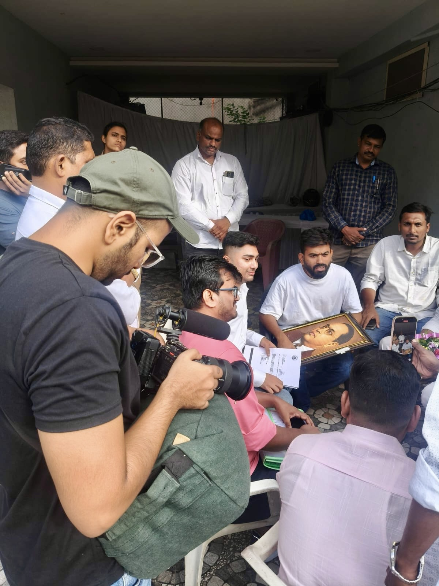
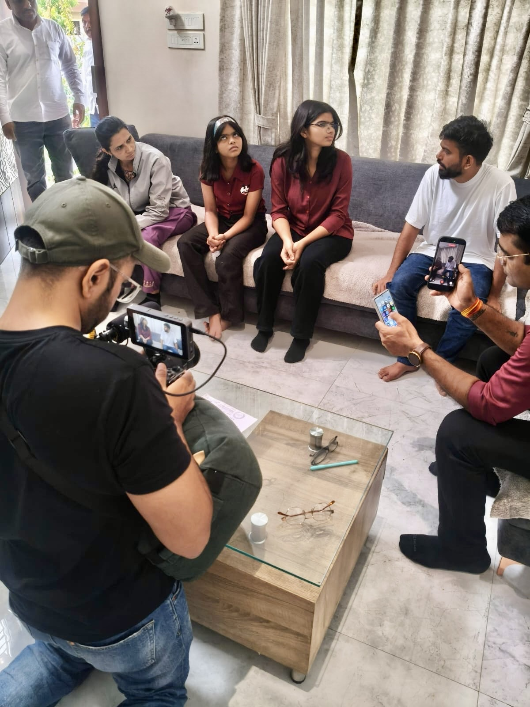
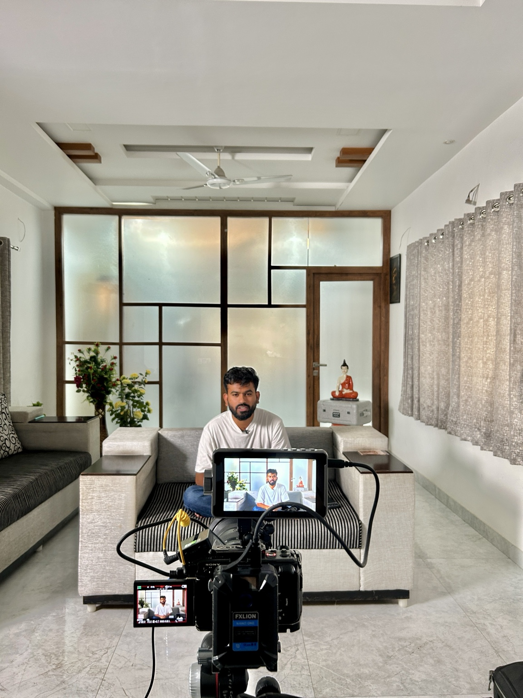
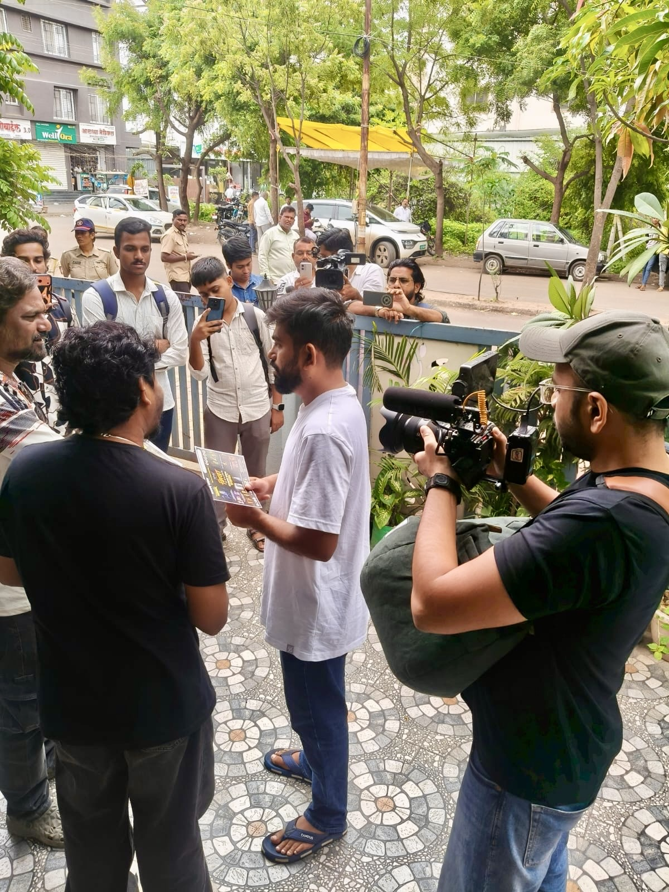
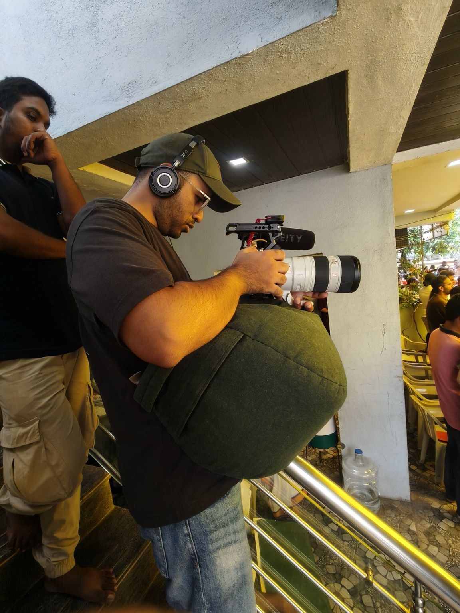
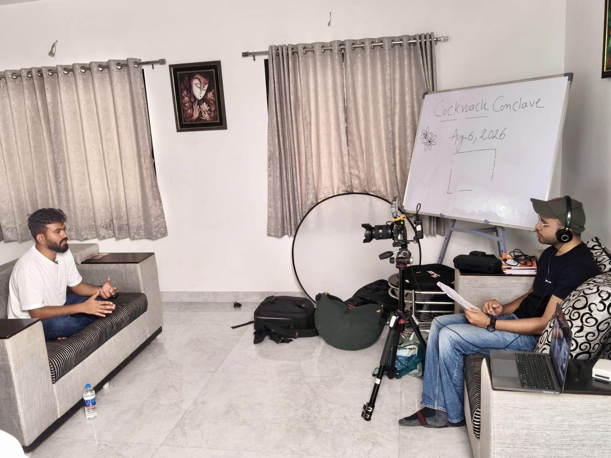
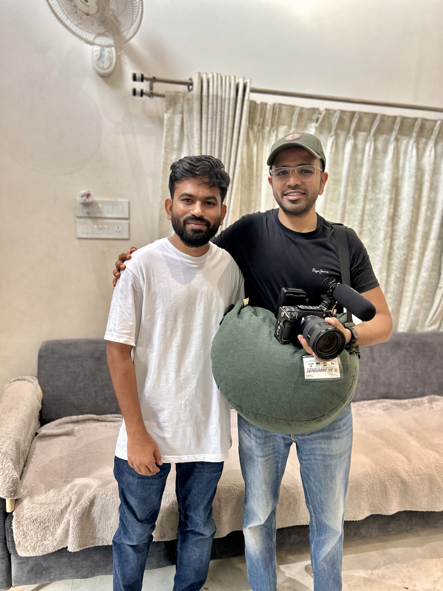
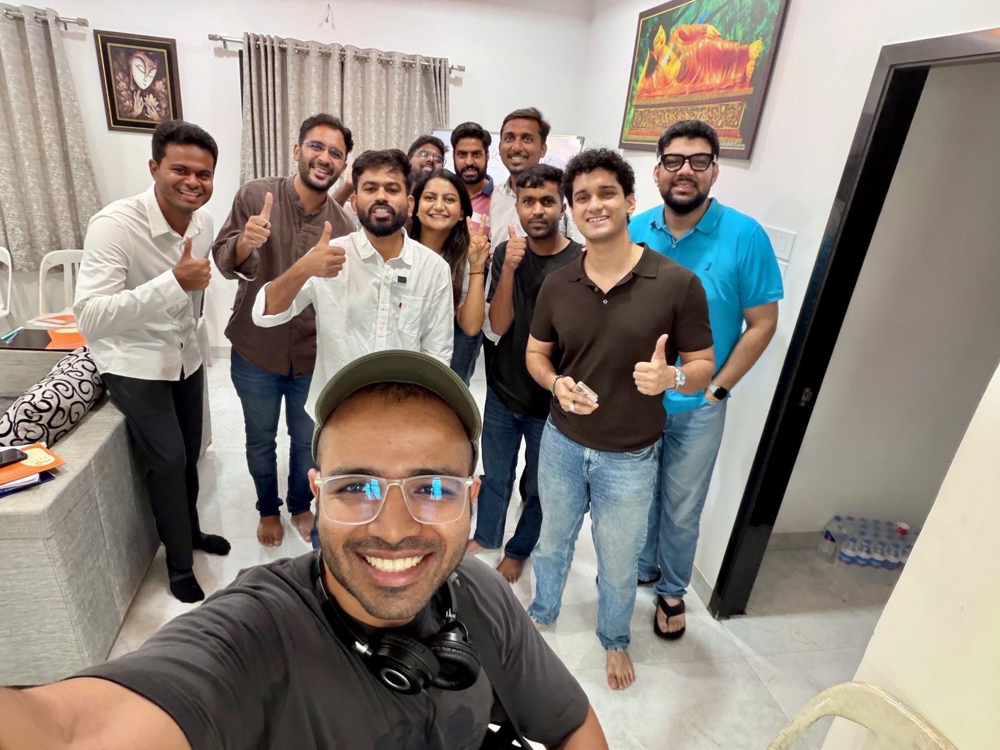
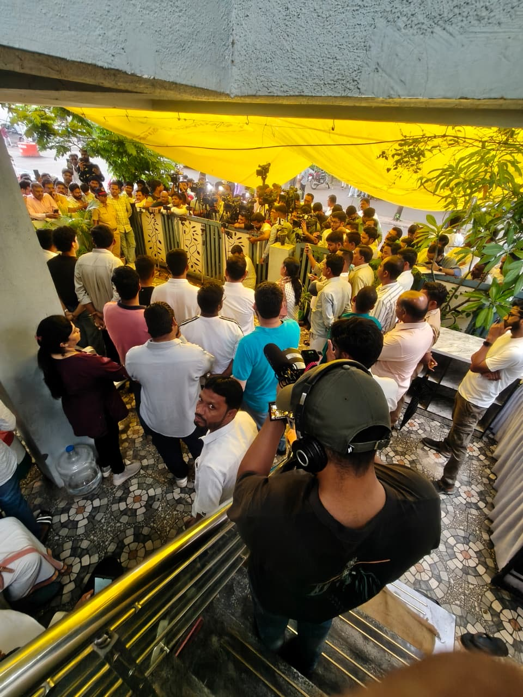

A story unfolding in real time.
The Cockroach Janta Party began as an online satirical movement and quickly became the subject of street protests in India. For The New York Times, the reporting and filming moved between intimate interviews, contributors' homes and crowded public gatherings in New Delhi.
The Cockroach Janta Party
The published New York Times video follows founder Abhijeet Dipke and the movement as it grew from an online idea into a national protest story.



The work was largely about staying close to the people at the centre of the story. Interviews happened in ordinary rooms, while the reporting could quickly move outside as public attention gathered.
With a compact field setup, the aim was to stay mobile and responsive — making space for conversations while also being ready when the scene changed.
People, cameras, crowds.
A selection of photographs from the production — interviews, filming setups, contributors, the wider team and the public gatherings surrounding the story.







Stay close to the story.
News stories like this can change from one hour to the next. The camera has to be ready for both the planned interview and the unexpected moment outside the door.
The production meant working around contributors, reporters, other cameras and a growing crowd — while keeping the filming intimate enough for the people at the centre of the story.